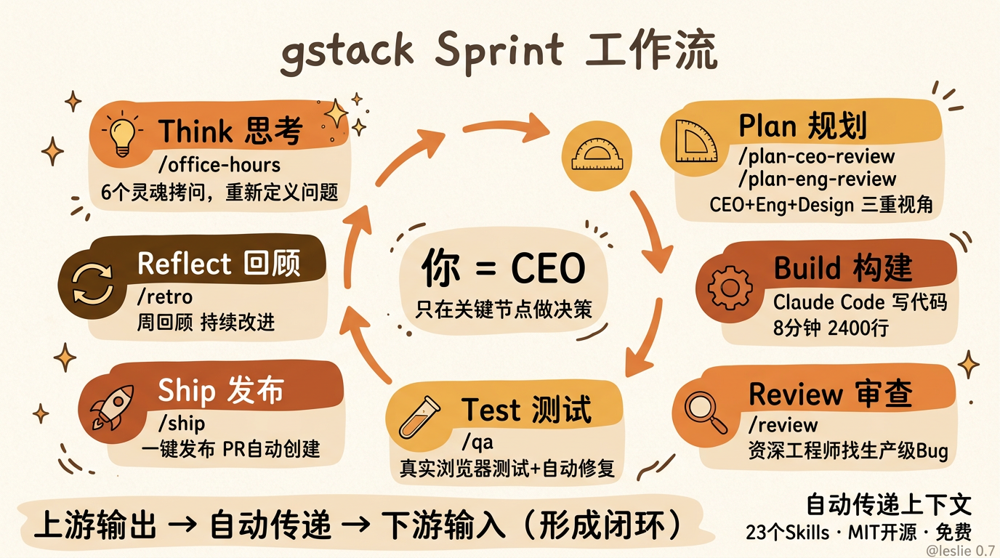
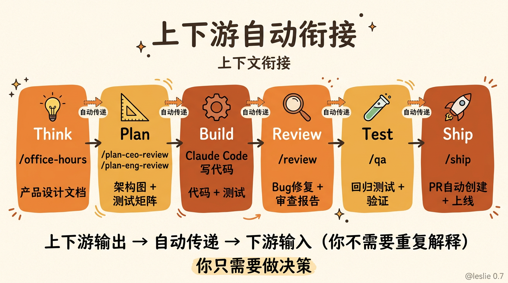
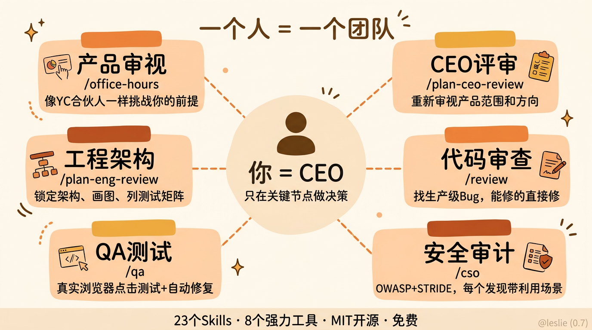
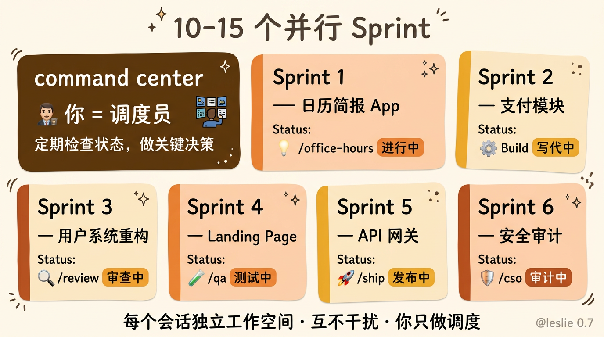
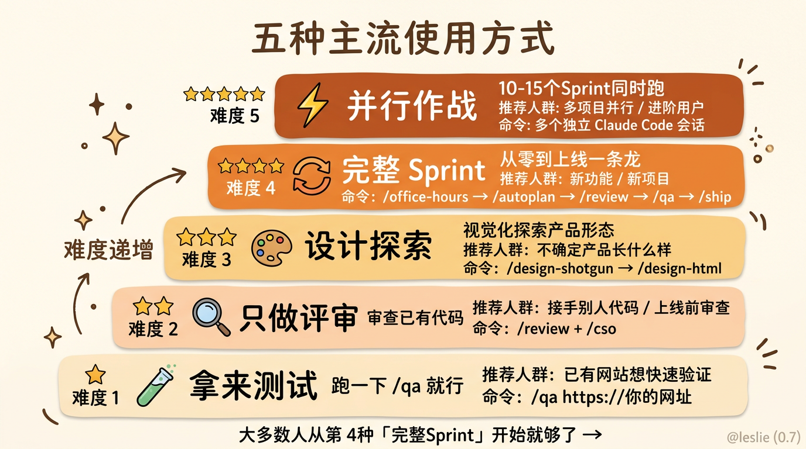

YC 的 CEO 兼职 60 天写了 60 万行代码，他把方法开源了
Andrej Karpathy 三月份在一个播客上说了句话，我听完之后愣了好一会儿。
「我大概从去年十二月开始就没怎么自己敲过代码了。」
Karpathy 啊。前 OpenAI 联合创始人，前特斯拉 AI 总监，现在自己做 AI 教育公司。这个级别的人说自己不写代码了，而且语气特别平静，就好像在说今天天气不错。
然后没过几天，我刷到了另一个人的数据。
Garry Tan，Y Combinator 的 CEO。对，就是那个全球最出名的创业加速器的掌门人。他在 GitHub 上开源了一套叫 gstack 的工具，README 里贴了一组数字。
60 天，60 万行生产代码。35% 是测试。每天 1 到 2 万行。
而且他是兼职写的。白天要全职运营 YC，管理几千家创业公司。
他的一周 retro 截图显示，140,751 行新增，362 次提交，净增大约 11.5 万行代码。就一周。
我第一次看到这组数据的时候，第一反应是不信。
一个人，兼职，一周 11 万行？
我自己也天天用 Claude Code，状态最好的时候一天撑死了几千行。60 万行是什么概念，很多中型公司一个季度都写不了这么多。
但是你去翻他的 GitHub 贡献图，2026 年 1,237 次贡献。然后他自己贴了一张 2013 年的对比图，那年他在 YC 内部做 Bookface，全职工程师，772 次贡献。同一个人，同样的 24 小时，差了十年，贡献数反而翻了快一倍。
他旁边写了一句话，「Same person. Different era. The difference is the tooling.」
同一个人。不同的时代。差距在于工具。
我看完之后坐了好一会儿。然后花了一整天把 gstack 的文档和源码扒了一遍。
看完之后我得说，这玩意确实有点东西。
gstack 是一套 Claude Code 的 Skills 工具集。23 个 Skills，外加 8 个强力工具。它做的事情用一句话概括就是，把 Claude Code 变成一个虚拟工程团队。
你自己是 CEO。然后你有一堆角色给你打工。
有帮你做产品审视的，叫 /office-hours，模仿的是 YC 著名的 Office Hours 传统。不是那种「你的目标用户是谁」的废话问答，而是六个灵魂拷问，直接挑战你的产品前提。你说你要做日历简报 App，它告诉你不，你描述的痛点明明需要一个私人参谋 AI。它会逼你重新审视自己到底在做什么。
有从 CEO 视角审视产品范围的 /plan-ceo-review，有从工程经理视角锁定架构的 /plan-eng-review，有从设计师视角审查 AI 审美的 /plan-design-review。有资深工程师做代码审查的 /review，有 QA Lead 打开真实浏览器做测试的 /qa，有首席安全官跑 OWASP 和 STRIDE 审计的 /cso，还有发布工程师一键上线的 /ship。
每个角色各司其职。
但 gstack 真正让我觉得牛逼的，不是某个具体的 Skill 有多好用。而是它的上下游衔接设计。
它定义了一个 Sprint 流程。Think，Plan，Build，Review，Test，Ship，Reflect。每一个环节都有对应的 Skill，而且上一个 Skill 的输出会自动变成下一个 Skill 的输入。

你跑完 /office-hours，它会生成一份设计文档。
你跑 /plan-ceo-review，它会自动读取那份设计文档来做产品评审。
你跑 /plan-eng-review，它会基于前面两步的结果来锁定架构，画 ASCII 架构图，列测试矩阵，把隐藏的假设全部逼到台面上。
然后 /qa 会自动拿到测试计划来跑测试。/review 会基于代码变更来做审查。/ship 会验证所有修复都到位了再发布。
整个链条是串起来的。任何一个环节都不会空转。

我跟你说，这个设计才是 gstack 的灵魂。
我们平时用 Claude Code，不管是写代码还是做别的，最大的问题是什么？是你每次都要从零开始给 AI 上下文。你让 AI 帮你做一个功能，你得先告诉它你的项目是什么、架构是什么、之前做过什么。你让它帮你 review 代码，你得告诉它你的代码规范是什么、哪些地方需要特别注意。
每一次，都是一次全新的对话。AI 对你项目的理解永远停留在你说出来的那几句话里。
gstack 解决的就是这个问题。
它不是给你一个更聪明的 AI，而是给 AI 一套流程。流程本身就是上下文。你不需要每次都从头解释你在做什么，因为上一个 Skill 已经帮你写好了。
这个感觉就像什么，就像你从一个人闷头写代码，变成了一个人管理一个团队。

你不需要自己去做每一件事。你只需要在关键节点做决策。
举个例子。你想做一个日历简报 App。你先跑 /office-hours，它像 YC 的合伙人一样问你六个问题，然后告诉你，你说的不是日历简报，你需要的是一个私人参谋 AI。它帮你重新定义问题，生成设计文档。
然后你跑 /plan-ceo-review，它读取设计文档，从 CEO 的角度审视范围。四个模式，扩张、选择性扩张、保持范围、缩减，它告诉你哪个最合理。
再跑 /plan-eng-review，工程经理视角，架构图、数据流、状态机、错误路径、测试矩阵，全给你画好。逼你把所有隐藏假设摆在台面上。
然后你退出计划模式，Claude 开始写代码。Garry 说他自己的体验是大概 8 分钟，2400 行代码，11 个文件。
然后跑 /review，自动修两个问题，再让你确认一个竞态条件。跑 /qa，打开真实浏览器，点击各种流程，发现一个 bug，自动修复，生成回归测试。跑 /ship，测试从 42 个涨到 51 个，PR 自动创建。
从头到尾，你在做的不是写代码。你在做的是，审查，决策，确认。
跟一个真正的 CEO 做的事一模一样。
说到这个，我想多聊聊这种「一个人管理一个团队」的感觉。
我自己用 Claude Code 也有一段时间了，之前也写过几篇文章分享使用经验。我之前的体感是，Claude Code 就像一个特别强的实习生，什么都能干，但你得盯着，得手把手教。有时候写出来的代码真的很惊艳，有时候又蠢到让你怀疑它是不是偷偷换了个模型。
gstack 改变的是这个关系。
装上 gstack 之后，你不是在教一个实习生做事了。你是在管理一个有流程有分工的团队。CEO 做产品决策，工程经理做架构，设计师做审美，QA 做测试，安全官做审计。你作为真正的人类，只需要在关键节点签字。
这让我想起管理学里一个经典概念叫「管理幅度」。说的是一个管理者最多能管多少人。传统说法是 7 到 10 个人。但如果是 AI 呢？
AI 不需要你照顾情绪，不需要你做一对一沟通，不需要你处理人际冲突。你唯一需要做的就是做决策。
Garry 说他现在同时跑 10 到 15 个并行的 Sprint。每个 Sprint 是一个独立的 Claude Code 会话，每个在自己的工作空间里干活，互不干扰。一个在做 /office-hours，另一个在做 /review，第三个在写代码，第四个在跑 /qa。他说 10 到 15 个是目前的实际上限。

10 到 15 个并行 Sprint。
你想想看，一个传统创业公司，产品经理、设计师、前端、后端、QA、运维，一个功能从需求到上线，多少人，多少天。
现在一个人，一周，搞定。
顺着上面的再聊聊几个我觉得特别有意思的 Skill。
/design-shotgun 这个东西我真的第一次看到就觉得，这才对嘛。你描述你想要什么，它用 GPT Image 生成 4 到 6 个设计变体，然后在浏览器里打开一个对比面板，所有方案并排展示。你选喜欢的，给反馈，比如「留白多一点」「标题再大点」「渐变太丑了」。然后它基于你的反馈生成新一轮。
几轮下来，它开始记住你的审美偏好，偏向你喜欢的东西。
AI 做设计最大的问题不是它做不好，是它不知道你想要什么。你用文字描述审美，怎么描述都描述不准。但给你看六个方案让你挑，你一眼就知道哪个好。
/design-shotgun 就是把设计从「文字描述」变成了「视觉选择」。
然后是 /design-html，它能把设计稿直接变成可发布的 HTML。不是那种看起来挺好一调整窗口大小就崩的 AI HTML，是用了 Pretext 做计算布局的，文字会真的重排，高度会真的跟着内容走。30KB，零依赖。它还能自动检测你用的什么框架，React、Svelte、Vue 都能输出对应的格式。这个输出是真的能上线的，不是 demo。
/cso，首席安全官。这个我之前一直觉得是噱头，直到我跑了一次。OWASP Top 10 加 STRIDE 威胁模型，17 个误报排除规则，8 分以上置信度门槛，每个发现都带具体的利用场景。说真的，比我自己手动做安全审查靠谱多了。我之前写代码从来不考虑安全问题，不是说我不在乎，是我真的不太懂。/cso 至少帮我兜住了这个下限。
还有 /qa。这个可能是 gstack 里最能拉开差距的一个。
它不是跑自动化测试脚本那种 QA。它是打开一个真实的 Chromium 浏览器，像真人一样点击你的页面，走完各种流程，发现 bug 直接修，修完生成回归测试，然后再验证一遍。
Garry 说 /qa 是他最大的一个解锁。让他从 6 个并行 worker 涨到了 12 个。因为以前他得自己手动测试每个页面，现在 AI 自己打开浏览器自己测。
他原话是这么说的，Claude Code 在终端里突然蹦出一句「I SEE THE ISSUE」，然后自己修了，生成回归测试，验证修复。这种体验彻底改变了他的工作方式。
回到这块，可能有人会问，这么多 Skill，实际用的时候到底怎么串起来？
我梳理了一下，主流的使用方式大概有这么几种。
第一种，也是最推荐的，是走完整的 Sprint 流程。适合从零开始做一个新功能或者新项目。你先跑 /office-hours 把需求想清楚，然后跑 /autoplan，这个 Skill 会自动串联 CEO 评审、设计评审、工程评审，一口气跑完，只把需要你拍板的「品味决策」拎出来让你选。选完之后 Claude 开始写代码，写完跑 /review，跑 /qa，跑 /ship。一条龙。你全程只做了几道选择题，代码已经上线了。
这是 gstack 最完整也最省心的用法。Garry 自己说的，「Stop there. You’ll know if this is for you.」跑完这一轮你就知道自己适不适合这个工作方式。
第二种是「只做评审」。你已经有代码了，可能是自己写的也可能是别的 AI 生成的，你想让它帮你把把关。直接跑 /review，它会像资深工程师一样帮你找生产级别的 bug，能自动修的直接修了，拿不准的标记出来问你。如果你对安全有要求，再跑一个 /cso，一套安全审计就出来了。这种用法适合接手别人的代码、上线前做最终审查、或者对自己 AI 生成的代码不放心的时候。
第三种是「设计探索」。你不写代码，你只是想看看一个产品应该长什么样。跑 /design-shotgun 生成几个方案，挑喜欢的迭代几轮，满意了跑 /design-html 出生产级页面。整个过程中你可能一行代码都没碰，但出来的东西已经可以上线了。
第四种是「并行作战」。这是进阶用法。你有多个项目同时在推进，每个项目跑一个独立的 Claude Code 会话。一个在做产品评审，另一个在写代码，第三个在跑 QA，第四个在做安全审计。你的角色就变成了调度员，定期检查每个 Sprint 的状态，做关键决策，剩下的让流程自己跑。Garry 说他日常就是这种模式，10 到 15 个并行。
第五种比较轻量，就是「拿来测试」。你有一个已经部署好的网站或者 staging 环境，跑 /qa https://你的网址，它会打开真实浏览器帮你测，找到 bug 直接修，修完生成回归测试。如果你只想看报告不想让它改代码，跑 /qa-only 就行。
说真的，大多数人从第一种开始就够了。跑一两个完整 Sprint 下来，你就知道自己哪个环节最需要 AI 帮忙，然后再根据自己的节奏调整。

你可能注意到了，我说了这么多，一直在聊「工作流」和「角色分工」，没花太多笔墨在具体的代码生成质量上。
这是故意的。
因为我觉得 gstack 最大的贡献不是让 AI 写的代码更好。代码质量这件事，随着模型的迭代，所有工具都会越来越好，今天 Claude 写得好，明天 Gemini 可能更好。gstack 解决的是另一个层面的问题。
它解决的是「一个人怎么规模化地使用 AI」。
怎么说呢。你一个人用 AI 写一个小工具，不需要 gstack，直接跟 Claude 聊就行。但你要同时推进五六个项目，每个项目都有需求梳理、架构设计、代码审查、测试、安全审计、发布这些环节，你自己一个个来，光是上下文切换就够你喝一壶的。
gstack 给了你一套流程。每个环节的输入输出都标准化了。你只需要在决策点出现的时候做选择。
这不是 AI 辅助编程。这是 AI 辅助管理。
还有一件事我觉得挺重要的。gstack 不只是 Claude Code 独占的。它支持 8 种 AI 编码工具，OpenAI 的 Codex CLI、Cursor、Factory Droid、Slate、Kiro、OpenCode 都能用。安装的时候自动检测你装了哪些。
这一点挺聪明。因为说真的，谁也不想被一个工具锁死。
安装也极其简单。一行命令，30 秒搞定。完全免费，MIT 开源协议，没有付费版，没有 waitlist。
Garry 在 README 里写了一句话，「I open sourced how I build software」。我把我的软件构建方式开源了。
这话听着挺朴素的。但想想看，YC 的 CEO，管着几千家创业公司的人，把自己的工作方式毫无保留地分享出来了。不管你觉得 gstack 好用不好用，这个姿态本身就挺让人尊敬的。
我看完 gstack 的所有文档之后，脑子里一直转着一个问题。
如果 Garry Tan 2013 年就有 gstack，他能做出什么。
如果 2013 年的一个全职工程师用今天的工具能跑出这样的产出，那今天一个有想法的独立开发者，用上同样的工具，能做到什么程度。
我自己的感受是，我们可能正站在一个特别有趣的时间点上。
以前一个人想做一件事，受限于自己的能力、时间、精力。你不可能同时是产品经理、设计师、工程师、QA、安全专家、运维。你只能选一个角色，剩下的要么找合伙人，要么外包，要么干脆不做。
现在，这些角色 AI 都能帮你兜住下限。你不需要在每个领域都是专家，你只需要有判断力，知道什么是好的什么是差的，然后在关键节点做决策。
说到底，AI 时代最值钱的能力不是写代码，不是做设计，不是任何一项具体技能。
是判断力。
是你能不能在一堆方案里挑出最好的那个。是你能不能在产品方向上做对选择。是你能不能在代码审查时看出那个别人都看不出来的坑。
gstack 把这种判断力的价值放大了。以前你的判断力只能通过你自己的双手来变现，你看出一个问题，你得自己动手修。现在你的判断力可以通过一个虚拟团队来变现，你看出一个问题，告诉 AI，它帮你修。
这个杠杆率是完全不同的数量级。
Peter Steinberger 用 AI Agent 一个人做出了 OpenClaw，24.7 万 GitHub Star。Garry Tan 兼职 60 天写了 60 万行代码。Karpathy 说他已经不怎么写代码了。
这些人不是在炫耀。他们是在展示一种新的可能性。
一个人，加上对的工具，就是一支队伍。
这不是什么鸡汤。这是 2026 年正在发生的事。
以上，既然看到这里了，如果觉得不错，随手点个赞、在看、转发三连吧，如果想第一时间收到推送，也可以给我个星标⭐～
谢谢你看我的文章，我们，下次再见。